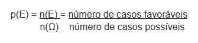
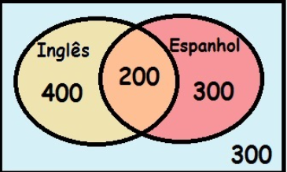
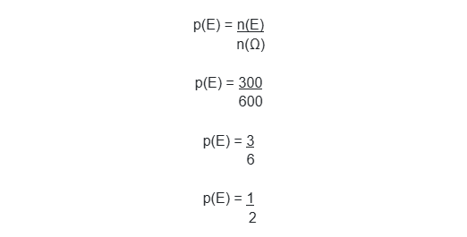

πclass — o principal pilar do seu aprendizado


Normalmente as situações propostas tratam de experimentos aleatórios e também de casos equiprováveis, isto é, os eventos possuem probabilidades iguais de ocorrência.
As questões de probabilidade no Enem baseiam-se na interpretação das ideias apresentadas e no uso do cálculo das chances de um evento acontecer, o qual é representado pela fórmula:
O número de casos favoráveis é justamente o que “estou procurando”, e o número de casos possíveis é também conhecido como o espaço amostral, sendo representado pela letra grega ômega (Ω). Vejamos dois exemplos de questões com probabilidade no Enem de provas anteriores.
EXEMPLOS:1. Todo o país passa pela primeira fase de campanha de vacinação contra a gripe suína (H1N1). Segundo um médico infectologista do Instituto Emílio Ribas, de São Paulo, a imunização “deve mudar”, no país, a história da epidemia. Com a vacina, de acordo com ele, o Brasil tem a chance de barrar uma tendência do crescimento da doença, que já matou 17 mil no mundo. A tabela apresenta dados específicos de um único posto de vacinação.
Escolhendo-se aleatoriamente uma pessoa atendida nesse posto de vacinação, a probabilidade de ela ser portadora de doença crônica é
De acordo com a tabela apresentada no exercício, temos informações a respeito de cinco tipos de público-alvo. O total formado por esses cinco grupos compõe o nosso espaço amostral. Vamos então somar e encontrar o total de pessoas vacinadas:
n(Ω) = 42 + 22 + 56 + 30 + 50
n(Ω) = 200
Então o grupo total de vacinados são 200 pessoas. Precisamos agora do número de casos favoráveis. Essa informação é a que mais nos interessa, a quantidade de pessoas portadoras de doenças crônicas que foram vacinadas. De acordo com a tabela, esse valor é de 22 pessoas. Vamos então utilizar a fórmula para o cálculo da probabilidade:
Fazendo a divisão de 11 por 100, encontramos o valor de 0,11. Multiplicando esse valor por 100, encontramos a porcentagem que procurávamos, 11%. Portanto, a alternativa correta é a letra c.
2. Numa escola com 1 200 alunos foi realizada uma pesquisa sobre o conhecimento desses em duas línguas estrangeiras, inglês e espanhol. Nessa pesquisa constatou-se que 600 alunos falam inglês, 500 falam espanhol e 300 não falam qualquer um desses idiomas. Escolhendo-se um aluno dessa escola ao acaso e sabendo-se que ele não fala inglês, qual a probabilidade de que esse aluno fale espanhol?
Assim como havíamos comentado no início, esse é o tipo de questão em que o raciocínio e a interpretação são fundamentais. Se somarmos o número de alunos que falam inglês, os que falam espanhol e os que não falam nenhuma dessas línguas, teremos um total de 1400, o que supera a quantidade de alunos da escola! Isso nos garante então que há alunos que falam inglês e espanhol simultaneamente. Vamos então determinar essas quantidades com exatidão.
Se temos 1200 alunos na escola e 300 deles não falam línguas estrangeiras, restam apenas 900 alunos que falam essas línguas. Se somarmos a quantidade de alunos que falam inglês (600) com os que falam espanhol (500), obteremos um total de 1.100. Então, ao fazermos a diferença desse total com a quantidade que fala língua estrangeira, isto é, 1.100 – 900, obteremos 200. Essa é a quantidade de alunos que falam as duas línguas. Portanto, de 600 alunos, apenas 400 falam somente inglês, e de 500 alunos, apenas 300 falam apenas espanhol. Para facilitar o entendimento, podemos organizar essas informações em um diagrama de Venn:
Através do Diagrama de Venn, podemos ver a distribuição dos alunos em relação à língua estrangeira falada
Através do diagrama de Venn, fica evidente que 400 alunos falam apenas inglês, 300 alunos falam apenas espanhol, 200 alunos falam as duas línguas e 300 alunos não falam nenhuma língua estrangeira.
Se vamos escolher um aluno que não fala inglês, nosso espaço amostral será composto por aqueles que falam apenas espanhol ou que não falam nenhuma língua, logo, n(Ω) = 600. O número de casos favoráveis é a quantidade de alunos que falam apenas espanhol, então n(E) = 300. Vamos então calcular a probabilidade:
Seleção de videoaulas sobre esse assunto com ótimos professores que os ofertam gratuitamente na internet:
1. Para analisar o desempenho de um método diagnóstico, realizam-se estudos em populações contendo pacientes sadios e doentes. Quatro situações distintas podem acontecer nesse contexto de teste:
1) Paciente TEM a doença e o resultado do teste é POSITIVO.
2) Paciente TEM a doença e o resultado do teste é NEGATIVO.
3) Paciente NÃO TEM a doença e o resultado do teste é POSITIVO.
4) Paciente NÃO TEM a doença e o resultado do teste é NEGATIVO.
Um índice de desempenho para avaliação de um teste de diagnóstico é a sensibilidade, definida como a probabilidade de o resultado do teste ser POSITIVO se o paciente estiver com a doença.
O quadro refere-se a um teste diagnóstico para a doença A, aplicado em uma amostra composta por duzentos indivíduos.
Conforme o quadro teste proposto, a sensibilidade dele é de:
2. O diretor de uma escola convidou os 280 alunos de terceiro ano a participarem de uma brincadeira. Suponha que existem 5 objetos e 6 personagens numa casa de 9 cômodos; um dos personagens esconde um dos objetos em um dos cômodos da casa.
O objetivo da brincadeira é adivinhar qual objeto foi escondido, por qual personagem e em qual cômodo da casa o objeto foi escondido. Todos os alunos decidiram participar. A cada vez um aluno é sorteado e dá a sua resposta
As respostas devem ser sempre distintas das anteriores, e um mesmo aluno não pode ser sorteado mais de uma vez. Se a resposta do aluno estiver correta, ele é declarado vencedor e a brincadeira é encerrada.
O diretor sabe que algum aluno acertará a resposta porque há:
A sensibilidade é definida como a probabilidade de o resultado ser positivo se o paciente estiver com a doença. Assim, é possível inferir que a sensibilidade é igual ao resultado positivo dividido pelo número de pessoas com a doença
Por isso, é necessário observar a coluna “presente” na tabela, que mostra as pessoas que têm a doença. Neste caso, 100 pessoas possuem a enfermidade e 95 é o número de resultados positivos.
Dessa forma, o cálculo se dá:
Sensibilidade = 95 ÷ 100 = 0,95Neste exercício, o primeiro passo é determinar o número total de possibilidades por meio do princípio multiplicativo:
6 x 5 x 9 = 270
Na sequência, é necessário realizar uma interpretação do resultado obtido no princípio multiplicativo.
Se cada aluno deve ter uma resposta e foram selecionados 280 alunos, entende-se que o diretor sabe que algum aluno acertará a resposta porque há 10 alunos a mais do que a quantidade de respostas possíveis.